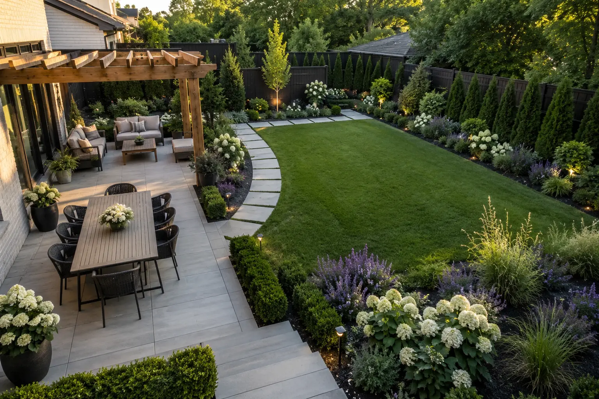

A backyard fails when every unused corner receives a feature but the full property never gains a clear hierarchy.
Start with the activities, connections and open space that must survive. Then place each zone where it makes practical sense.
List the actual uses
Separate daily use from occasional wishes. A dining area used every week deserves stronger placement than a decorative feature used twice a year.
Write the primary, secondary and future uses before drawing zones.
Use this check
- Dining and food service
- Conversation or lounge
- Children, pets or flexible lawn
- Storage and service access
Protect circulation
Doors, gates, sheds and utility areas create permanent movement lines.
Do not place furniture or planting where people will cut across the lawn to reach a destination.
Use this check
- Map direct routes
- Allow furniture clearance
- Protect gates and service paths
- Avoid decorative detours

Keep useful open ground
Open lawn can be a functional room, not an unfinished gap.
Place built features around the perimeter when that protects flexibility and makes phasing easier.
Use this check
- Preserve a clear center
- Use edges for privacy
- Keep future options open
- Avoid fragmenting the lawn
Place rooms by connection
Dining usually belongs near the house. A quiet lounge can sit farther away when the path remains clear.
Shade, evening sun, noise and views should influence the exact position.
Use this check
- Near-house service
- Sun during use hours
- View and privacy direction
- Drainage and grade
Verify before construction
A visualization cannot confirm property lines, drainage engineering, structural loads or fire clearances.
Use the concept to guide discussion with qualified local installers and authorities.
Use this check
- Locate utilities
- Confirm property boundaries
- Check permits and codes
- Verify product clearances
Before you act
Confirm plant suitability, utilities, drainage, permits, property boundaries and product installation requirements using authoritative local sources. This article provides general planning guidance, not engineering, horticultural certification or construction approval.
See your space before you spend.
Send clear photos and priorities. The correct scope is confirmed before Etsy checkout.
View Design Packages